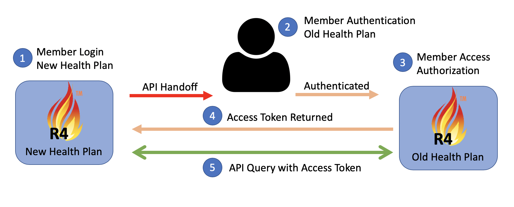
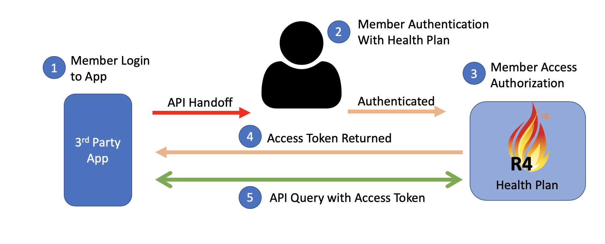

Da Vinci Payer Data exchange - Local Development build (v0.1.21). See the Directory of published versions
title: PDex Implementation, Actors, Interactions, Data Payloads and Methods
This section defines the Actors, Exchange Interactions and Data Payloads covered by the PDex IG.
The Member Health History is represented as a series of FHIR Resources that are based on a superset of HL7 FHIR US Core, HRex and PDex profiles. The content/payload of the Member Health History may be augmented by FHIR resources that are generated outputs from other HL7 Da Vinci IG use cases, such as Coverage Requirements Determination.
The following actors are recognized in the PDex IG:
There are different terms used for an individual or patient in the Health Plan industry. Terms such as subscriber or member may be used. A subscriber and a member are not necessarily equivalent. For example the subscriber may be the primary family member on a plan that covers the entire family. Therefore the term Member will will be used through out this guide to identify the indivudal subject of the “member health history”.
For the purposes of this IG a covered entity, such as a Provider, may create an application for connection to a Health Plan FHIR API.
The PDex IG is specifying three exchange interactions:
The PDex IG defines two types of data payload:
All resources and operations available via a FHIR API endpoint SHALL be declared in a FHIR CapabilityStatement.
See Data Mapping for details of the Data Payloads and operations.
The PDEx IG is focused around member or plan directed exchange of a member’s data.
All exchanges in this IG are for an individual. Where one member has permission to access the information for another member of the health plan they should provide appropriate credentials to enable the exchange for that individual.
The PDex IG specifies three interaction methods. Their use depends upon the Actors involved and the Data Payloads being exchanged.
There are three potential interaction methods:
Clinical systems will use the specification and workflows defined by CDS Hooks to initiate Payer Data Exchange with Health Plans. Implementers must be familiar with all aspects of this specification.
SMART-on-FHIR is expected to be used in conjunction with CDS Hooks in two principle ways:
The CDS Hooks and SMART-on-FHIR application configuration is detailed in CDS-Hooks.
The specification of a SMART-on-FHIR App to initiate a CDS-Hook call to a Health Plan’s FHIR API enables:
CDS Hooks provides a mechanism for providers/clinicians to request a medical history for their patient from the Health Plan as part of their regular workflow - when scheduling an appointment. However, sometimes clinicians may be interested updating the patient’s medical history without going through the appointment booking steps within their EMR. I.e. They don’t want to actually create an appointment, they just want to ask the question “Has anything new happened to my patient at some other location?”
Sometimes clinicians want to check and update a patient’s history, for example during a patient review, or responding to a question from a patient. The solution to this need is the use of a SMART on FHIR app that will invoke a CDS Hook. This is possible because many EMR systems provide support for SMART on FHIR. This use of SMART is distinct from the use of SMART in CDS Hooks. This isn’t launching a SMART app based upon the contents of a returned card. Instead it is using SMART to invoke a CDS Hook in place of the EMR. It is emulating the workflow trigger that would normally trigger a hook within an EMR workflow.
The SMART on FHIR CDS Hook trigger approach was pioneered by the Da Vinci Coverage Requirements Discovery IG (CRD-IG). Developers interested in using this approach should refer to the CDS Hooks and SMART on FHIR sections of that IG for the latest guidance, exaamples and links to code samples.
The PDex IG uses a similar approach to enable a CDS Hook. The CDS Hook used by PDex is:
This IG also proposes the creation of a new CDS Hook for the interaction defined in this IG. This hook would be:
An overview of the transaction flow is shown in figure 4-1:
 **Figure 4-1: CDS-Hooks SMART-on-FHIR Transaction Flow
**Figure 4-1: CDS-Hooks SMART-on-FHIR Transaction Flow
When a Health Plan server responds to a CDS Hook, one of the possible actions is to allow the user to invoke a SMART App. Support for this option by Health Plan systems SHOULD be provided. The SMART on FHIR app provided as a link from the returned CDS Hook SHOULD enable a clinician to review the available Health Plan’s data for their patient, select the data they want to commit to their EMR system and upon confirming their selection, enable the selected data to be written to the clinician’s EMR system.
The objective of this flow is to place the decision about the data being deposited into the EMR into the hands of the responsible organization and their providers. This does not prevent an organization from defining data selection criteria that filters Health Plan provided information and automatically importing records that meet their criteria. For the purposes of this IG and accompanying Reference Implementation the manual provider selection method was used to illustrate the record import capability.
The Da Vinci Documentation Templates and Rules Implementation Guide (DTR-IG) provides additional guidance and expectations on the use of CDS Hook cards to launch SMART Apps and how payer-provided SMART Apps should function.
All requesters (e.g. EHRs) SHOULD store provenance associated with any data exchanged as part of this IG if it is committed to their system.
The well defined mechanism for enabling Member/Patient authorization to share information with an application using the FHIR API is to use OAuth2.0 as the Authorization protocol. The member SHALL authenticate using credentials they have been issued by the Health Plan. This is typically the member’s customer portal credentials.
The member will typically register with a third party application, service or new (target) Health Plan with whom they wish to share data. During that registration process the member should review and agree to the Terms of Service and a Privacy Policy that details how the application or service will use the member’s data froom the (source) Health Plan. While authenticated to the application or service the member MAY connect to the (source) Health Plan’s FHIR API and authorize sharing of their information. After authenticating to the (source) Health Plan’s FHIR API the Member SHALL be presented with an Authorization screen that enables them to approve the sharing of information with their intended application, service or (target) Health Plan. For this authorization to occur the Application, service or (target) Health Plan will require OAuth 2.0 client application credentials that are issued by the (source) Health Plan in order to register an authorization request.
The Authorization process, in accordance with applicable privacy policy, SHALL provide a mechanism to support current regulations allowing members the right to decide what information is permitted to be exchanged. Examples of member authorized restrictions/permissions are 42CFR, State and Federal requirements for sensitive data.
After successfully authorizing an application an Access Token and Optional Refresh Token SHALL be returned to the requesting application.
The scopes of the access token SHALL be restricted to the authorizing Member’s information and the scopes approved.
Any subsequent Access Token issued based on the Refresh Token SHALL be restricted (at least) to the same restrictions.
The requesting application SHALL use the access token to access the Health Plan’s secure FHIR API to download the information that the Member is allowed to access.
The OAuth2.0 Member-authorized exchange is detailed in Section: Member-Authorized OAuth2.0 Exchange.
An overview of the OAuth2.0 Flow using the FHIR API is shown below for both Health Plan exchange and Third Party Application Exchange:
 **Figure 4-2: Payer-to-Payer Exchange with Member Interaction
 **Figure 4-3: Payer to Application Interaction
The FHIR Specification provides for a Patient-everything operation. The supported format is:
Health Plans MAY enable support for a Patient-everything bundle to be created. Exchange of this bundle SHOULD be accomplished using SMART or SMART Backend services. The bundle may alternatively be exchanged via a transport method that supports the secure exchange of PHI.
This operation is intended to simplify requests from a client application when requesting records for a patient.
A Health Plan’s FHIR API SHOULD support the Patient-everything operation as defined in the FHIR R4 specification here: https://www.hl7.org/fhir/operation-patient-everything.html
The Patient-everything operation is provided in this IG as a method to address the uncertainty in the February 11, 2019 publication of the CMS Interoperability Notice of Proposed Rule Making (NPRM). The NPRM makes reference to a possible Payer push of member-authorized health data. The Patient-everything operation is identified as a potential method to package all of a member’s health history into a records bundle for transmission.
The Patient-everything operation SHOULD be available as an operation via the Health Plan’s FHIR API.
Member-authorized sharing of their health history MAY utilize the Patient-everything operation. However, the information returned in a bundle by the operation will be limited to only the member’s information. The OAuth2.0 access token used to give access to a Member’s records is ONLY valid for that member. If a Payer or Third-Party application has access tokens for multiple members they MUST call the Patient-everything operation discretely for each member, using the access token provided by the relevant patient.
The Patient-everything operation compiles a FHIR Bundle. In addition to the OAuth2.0 Member-authorized Payer-to-Payer and Payer-to-Third Party Application Exchange method, Health Plans MAY enable support for a Patient-everything bundle to be created and pushed via an alternate secure transport method between the Heallth Plan and another Trusted Entity such as another Health Plan.
The Patient-everything operation supports the use of the bulk FHIR data format Specification. A Health Plan MAY format the Patient-everything records to be exchanged using the ND-Json format.
IG © 2020+ . Package hl7.fhir.us.davinci-pdex#0.1.21 based on FHIR 4.0.1. Generated 2020-09-30
Links: Table of Contents |
QA Report
| Version History |
Search |
 |
Propose a change
|
Propose a change